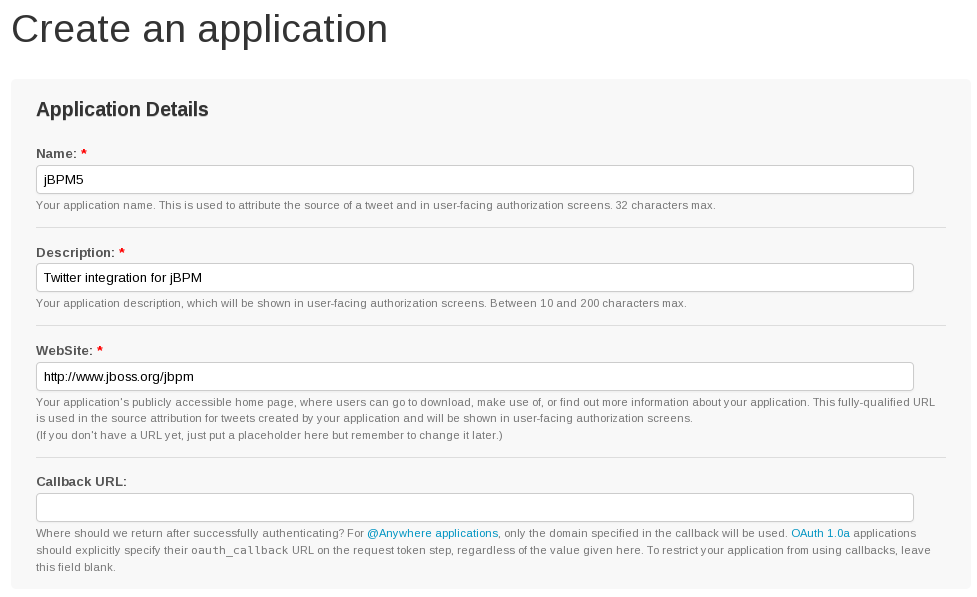
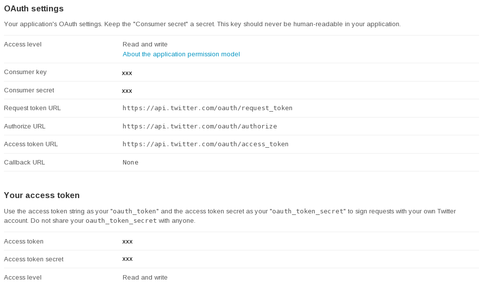

The message that needs to be set as the twitter status
Results
Handler
org.jbpm.process.workitem.twitter.TwitterWorkItemHandler
Can be configured using setCredentials(String consumerKey, String consumerSecret, String accessKey, String accessSecret).
These properties can also be set using a twitter.properties file in the classpath, containing values for the following properties: twitter.consumerKey=
twitter.consumerSecret=
twitter.accessKey=
twitter.accessSecret=
To generate valid keys and secrets that you can use to send status updates to your twitter account, you obviously first will need a twitter account. Go to https://dev.twitter.com/apps and log in. In order to tweet, you will need to create an application. Click on Create a new application and fill in your application details (note that you'll need to create a unique name for your application) and submit.

OAuth is the mechanism used to authenticate you to twitter. You need valid keys to be able to publish tweets programmatically. The key has four parts
Consumer Key
Consumer Secret
Access Token
Access Token Secret
As soon as you create the keys you will see that the access is read-only. You need to go to the Settings tab and change it to Read and Write. After your changes are done it will take a minute for the changes to take effect. Once the access level is read and write, you should generate your access token. Once the keys are generated you will see a screen like the one below. Use they keys and secret to configure the handler (either programatically or by using the twitter.properties file).
